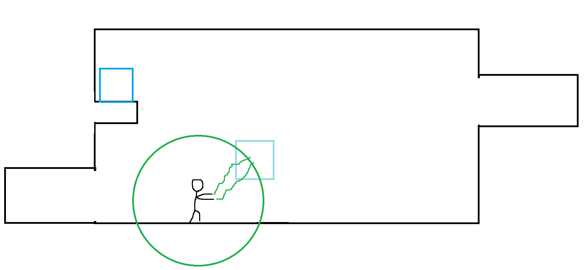
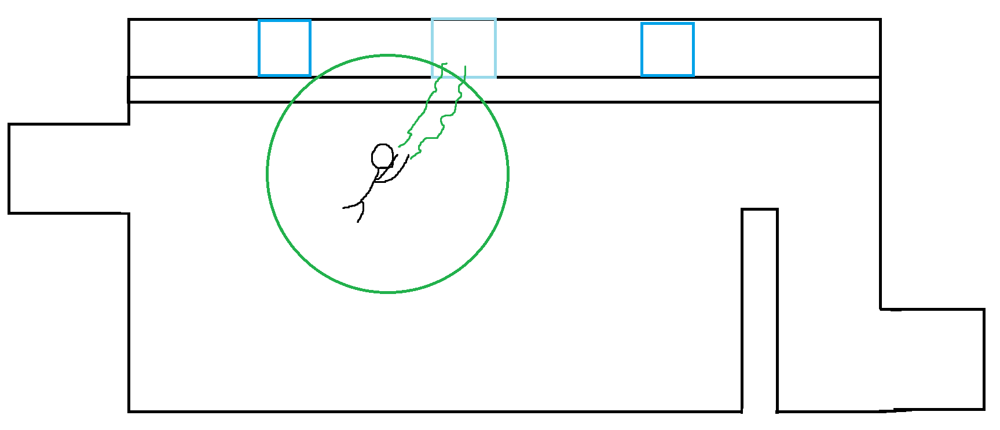

Graviturgy
I. High Concept
It's a platformer where you can use the force!
II. Genre
Puzzle platformer
III. Platform
Desktop (requires keyboard and mouse)
IV. Story
You're escaping a science facility conducting experiments with gravity. As you're leaving you pick up a pair of Gravity Gloves and use them to break out. The story is essentially a set up for why the player is going through all of these puzzles. The mood is rather calm since the player isn't under any rush, nor should they be under stress when trying to think through this problem solving.
V. Esthetics
Graphics style - cartoonish, possibly stick figures if I'm pressed for time.
Sound - 8-bit. Most sounds are used for player actions (jumping, grabbing an object, etc). If I had time to add dialogue for the lab's pre-recorded security messages, those would be included as well for when the player enters a new room or the like. May add these in the future for fun.
VI. Gameplay
Mechanics
The core gameplay revolves around the player's ability to move, jump, manipulate objects (mostly crates). When the player clicks and holds on a movable object within a certain distance from them, the object follows the player's mouse (but still adheres to collision). While holding onto an object, the player is unable to walk or move outside of grabbing range. Also, the gravity gloves have a battery limit that goes down when an object is moved. When out of charge, the player becomes unable to grab any objects and drops any they were currently holding. Batteries are recharged upon entering a new room or when picking up a battery power-up. Lastly, there will be zones or gates where objects cannot be moved through and/or where the gravity gloves cannot be used.
NOTE: Having made the puzzle rooms for this project, I concluded that the battery mechanic was not needed to add depth to the puzzles, so I opted to not add it.
Control
Keyboard & Mouse (keyboard to move, mouse to grab)
Teaching the game/New user experience aka "Onboarding"
The very first room the player starts in will have indicators in the background (but clear enough to notice easily) that show the WASD keys, prompting the player to use those to move. Once they move to the right of their holding cell, there will be a wall that's too high to jump up, and a box in front of it. In the background will be another prompt directly above the box that shows the left mouse button pressed, prompting the player to click on the box. Additionally, movable objects will havea special outline to draw the player's attention to them, and when the cursor is over a movable object the object and cursor will change appearance slightly.
NOTE: The crates the player can move are shown moving (dropping from the ceiling) when the player first sees them, implying they are mobile. Instead of having a special outline or hover effect, the cursor switched to the mode it has when hovering over a button. Plus, when holding onto a crate, it glows blue.
Player learning
As a puzzle game, the depth comes from figuring out how to use the Gravity Gloves to make a path to the exit of each room. Some combos include flinging objects to throw them further without using excess battery charge, swinging off of objects that are fixed to the ceiling, and moving objects underneath the player.
NOTE: After designing the levels, the main depth and fun came from figuring out how to get height to reach objects and how to add speed to crates to fling them further, as well as interacting with the anti-crate walls.
VII. Screenshots
 VIII. Other
This will use PIXIjs to render images and Howler to play sounds. The game takes inspiration from momentum-based puzzle games such as Portal and physics sandboxes such as GMod (in particular, the physics gun).
IX. About the developer
I'm Daniel Kowalski, a 2nd year Game Design & Development major at RIT. I'm skilled in general programming, game design, graphic design, and photoshop. Generally I like to use object oriented languages such as C# and full game engines, particularly Unity. I'm a huge fan of strategy, platformer, puzzle, and tabletop games.
X. Development Process
Out the gate, I focused on getting the physics system working as soon as possible. The earliest playable version of the game was just an empty room with a grey box that you could fling around. After making sure the physics system felt as good as possible, I started working on the player and their controls. Once again, after making sure those felt tight, I went on to start designing levels.
The level design was probably the most interesting and challenging part of the design process. Essentially, my goal was to make levels that were both interesting enough given the mechanics I designed, but not too complicated or difficult to solve. Knowing this, I started sketching out various puzzle rooms with different methods of solutions. For example, some puzzles are about trying to get a box from one side of the map to another (usually via flinging), while another is about riding a box across a gap you can't walk on.
The other aspect of level design I had to consider was onboarding. In fact, most of the levels I implimented into the final game are effectively tutorials to get the player used to the mechanics and their toolkit for puzzle solving. If I update this game in the future, I will likely add in more complicated puzzles such as those near the end of the game, but for each new type of challenge a puzzle provides (such as flinging or retrieving boxes), I would have a level some time before it that introduces that mechanic in a simpler scenario.
Overall, I'm proud of how Graviturgy turned out. I often found myself messing around in the game when testing and getting distracted from what I was working on. In the future, I might go back to add more levels, new types of mechanics (moving platforms, crate-only walls, etc), and a voice over to make the place feel less empty.